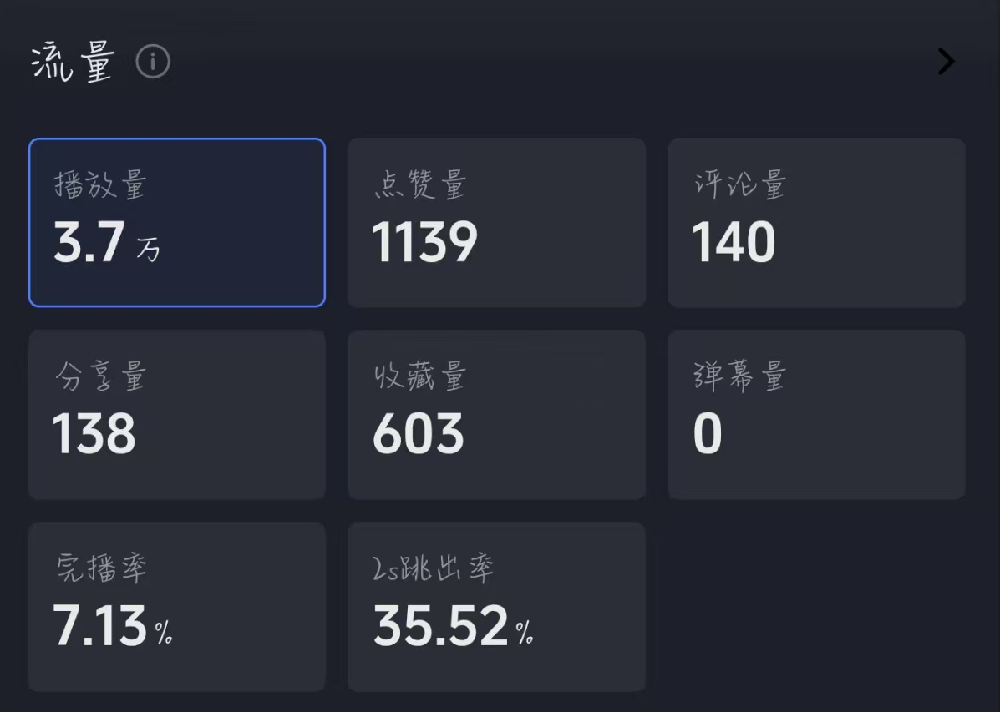
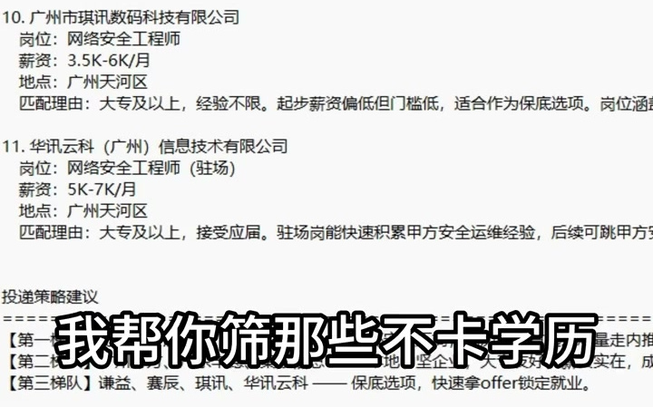

用具体处境建立共鸣
从学历、经历不占优势和海投反馈少等问题切入，让目标用户快速识别自己的困惑。

约1,000两周自然新增粉丝
参与运营阶段数据，由本人确认。2026.07 - 2026.11 围绕求职情绪、具体痛点和产品优势组织内容，衔接简历优化与岗位筛选服务咨询。
从学历、经历不占优势和海投反馈少等问题切入，让目标用户快速识别自己的困惑。
展示岗位清单、匹配理由和交付方式，说明产品能帮助用户处理哪些求职问题。
通过评论、私信和主页入口承接咨询，整理专业、意向城市及相关经历，作为后续服务的输入。

我的工作重点：选题与内容表达、咨询需求整理、交付说明和反馈跟进。
播放量之外，我也关注开头留存、交付展示的时机，以及评论中的实际需求。
原作约24秒才首次展示清单，约54秒提出咨询所需资料。评论中出现询价、补充专业与城市、请求推荐等反馈。
下一版准备压缩重复痛点表达，提前展示一项具体交付，再比较同一观察窗口内的留存与有效咨询。
时间点来自抽帧近似观察。留存数据用于建立比较基线，不直接推断单一原因。
已发布作品 / 57.2秒
从“不占优势”的求职处境切入，唤起目标用户共鸣。
用具体材料承接前面的求职困惑，解释服务价值。
提出专业与意向城市等信息，为下一步咨询做准备。
未发布建议稿 / 尚无效果数据
一句具体处境，接一项匿名岗位推荐，让用户更早看到交付物。
展示岗位门槛与能力对应点，讲清筛选依据。
区分优先核实、可以尝试和备选方向，给出投递顺序。
邀请提供专业、相关经历与意向城市，降低后续沟通成本。
直接使用DeepSeek辅助整理需求、简历表达和岗位信息，再逐项人工核对，形成用户看得懂、能使用的说明。
整理岗位、城市、相关经历与限制条件，标记仍需补充的信息。
借助AI梳理经历和表达，人工核对事实，保留源稿与交付稿。
先核硬性门槛，再解释推荐理由、限制条件和投递入口。
按主要痛点和紧迫程度安排响应，把反馈带回后续内容和交付。
把已确认的信息、判断依据和待核项分开，让每一份交付都能回溯。
2024.05 - 2025.05
面向百货店、超市、一美元店等实体经营者，通过内容展示供货信息并承接咨询。
以抖音为主，完成选题、拍摄剪辑、发布与私信接待；X、TikTok有基础实践。
新媒体运营、内容运营，以及以内容获客为主的账号运营岗位。
能从用户问题中找选题，完成内容制作与发布，跟进评论私信，并用数据复盘下一步改动。
如需交流岗位适配或案例细节，可通过收到这份作品集的招聘平台联系我。